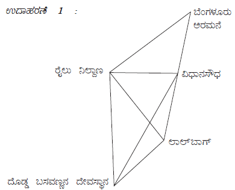
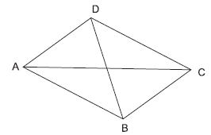

| Home | |
| SEARCH |
1. ಬಹುಭುಜ :ಸರಳ ರೇಖೆಗಳಿಂದ ಆವೃತವಾಗಿರುವ ಸಮತಲಾಕೃತಿ. ಬಹುಭುಜಾಕೃತಿಯ ಬಾಹುಗಳಿಂದ ಆವೃತವಾಗಿರುವ ಪ್ರದೇಶ ಬಹುಭುಜ ಪ್ರದೇಶ. 2. ಬಹುಮುಖಘನ:ಸಮನಾದ ಬಾಹುಗಳುಳ್ಳ ಮತ್ತು ಸಮನಾದ ಕೋನಗಳನ್ನು ಹೊಂದಿರುವ ಆಕೃತಿ ನಿಯಮಿತ ಬಹು ಭುಜಾಕೃತಿ. ಎಲ್ಲಾ ನಿಯಮಿತ ಬಹುಭುಜಾಕೃತಿಗಳು ಚಕ್ರೀಯವಾಗಿವೆ.3. ಬಹುಮುಖಘನ :ಮೂರು ಆಯಾಮವುಳ್ಳ ಮತ್ತು ಬಹುಭುಜಗಳಿಂದ ಮುಚ್ಚಲ್ಪಟ್ಟಿರುವ ಘನಾಕೃತಿಯನ್ನು ಬಹುಮುಖಘನ ಎಂದು ಕರೆಯುತ್ತೇವೆ. ಒಂದು ಬಹುಮುಖ ಘನವು ಅವಕಾಶವನ್ನು ಎರಡು ಪ್ರದೇಶಗಳಾಗಿ ಅಥವಾ ವಲಯಗಳಾಗಿ ವಿಭಾಗಿಸುತ್ತದೆ. ಒಂದು ಘನದ ಒಳಗಡೆ ಒಂದು ಪ್ರದೇಶವಿದ್ದರೆ, ಅದರ ಹೊರಭಾಗ ಮತ್ತೊಂದು ಪ್ರದೇಶವಾಗಿರುತ್ತದೆ.ಒಂದು ಬಹುಮುಖ ಘನದ ಮುಖಗಳ ಸಂಖ್ಯೆಯನ್ನು F ಶೃಂಗಗಳ ಸಂಖ್ಯೆಯನ್ನು V ಎಂದೂ ಹಾಗೂ ಅಂಚುಗಳ ಸಂಖ್ಯೆಯನ್ನು E ಎಂದು ಸೂಚಿಸುತ್ತೇವೆ 4. ನಿಯಮಿತ ಬಹುಫಲಕಗಳು:ಒಂದು ಬಹುಭುಜಾಕೃತಿಯ ಎಲ್ಲಾ ಮುಖಗಳು ನಿಯಮಿತ ಬಹುಭುಜಗಳಾಗಿದ್ದರೆ ಅದನ್ನು ನಿಯಮಿತ ಬಹುಫಲಕಗಳು ಎಂದು ಕರೆಯುತ್ತೇವೆ. ನಿಯಮಿತ ಬಹುಫಲಕಗಳಲ್ಲಿ ಕೇವಲ ಐದು ವಿಧಗಳಿವೆ. 1) ಚರ್ತುಮುಖಘನ 2) ಷಣ್ಮುಖಘನ 3) ಅಷ್ಟಮುಖಘನ 4) ದ್ವಾದಶಮುಖಘನ 5) ವಿಂಶತಿ ಘನಈ ಐದು ಘನಾಕೃತಿಗಳನ್ನು ಪ್ಲೇಟೋನಿಕ್ ಘನಾಕೃತಿಗಳೆಂದು ಕರೆಯುತ್ತೇವೆ. ಜಾಲಾಕೃತಿಗಳುಬೆಂಗಳೂರಿನಲ್ಲಿರುವ ಕೆಲವು ಪ್ರಮುಖ ಪ್ರೇಕ್ಷಣೀಯ ಸ್ಥಳಗಳನ್ನು ಇಲ್ಲಿ ಸಾಂಕೇತಿಕವಾಗಿ ಗುರುತು ಮಾಡಲಾಗಿದೆ. ಈ ಸ್ಥಳಗಳಿಗೆ ತಲುಪುವ ರಸ್ತೆ ಮಾರ್ಗಗಳನ್ನೂ ಇಲ್ಲಿ ಸೂಚಿಸಿದೆ. ಉದಾಹರಣೆ 2: A,B,C ಮತ್ತು D ಗಳು ಸ್ನೇಹಿತರು. ಇವರುಗಳ ಪರಸ್ಪರ ಹಸ್ತಲಾಘವಗಳನ್ನು ಬಿಂದುಗಳು ಹಾಗೂ ರೇಖೆಗಳಿಂದ ಹೀಗೆ ಸೂಚಿಸಬಹುದು. ಬಿಂದುಗಳು ಮತ್ತು ರೇಖಾಖಂಡಗಳಿಂದ ಚಿತ್ರಿಸಬಹುದಾದ ಇಂತಹ ನಕ್ಷೆಗಳನ್ನು ಗ್ರಾಫ್ ಅಥವಾ ಜಾಲಾಕೃತಿ
ಎಂದು ಕರೆಯುತ್ತೇವೆ. (1) ಒಂದು ನಗರದಲ್ಲಿ ಸರ್ಕಾರಿ ಬಸ್ಗಳು ಸಂಚರಿಸುವ ಸ್ಥಳಗಳು ಮತ್ತು ಅವುಗಳ ಸಂಚಾರ ಮಾರ್ಗಗಳು, (2) ಒಂದು ಕೊಠಡಿಯಲ್ಲಿ ವಿದ್ಯುದೋಪಕರಣಗಳನ್ನು ಸ್ವಿಚ್ಗಳಿಗೆ ಸಂಪರ್ಕ ಕಲ್ಪಿಸುವ ವಿದ್ಯನ್ಮಂಡಲ, (3) ಒಂದು ಕಟ್ಟಡದಲ್ಲಿ ನೀರಿನ ಟ್ಯಾಂಕ್ನಿಂದ ಬೇರೆ ಬೇರೆ ಕೊಳಾಯಿಗಳಿಗೆ ಜೋಡಣೆ ಪೈಪುಗಳ ಮೂಲಕ ಇರುವ ಸಂಪರ್ಕ ಮಾರ್ಗ.... ಇತ್ಯಾದಿ. "ಗ್ರಾಫ್ ಸಿದ್ಧಾಂತ" ಎಂಬುದು ಗಣಿತದ ಒಂದು ವಿಶಿಷ್ಟ ಭಾಗ. ಜಾಲಾಕೃತಿಗಳನ್ನು ಗ್ರಾಫ್ ಸಿದ್ಧಾಂತದಲ್ಲಿ ಅಧ್ಯಯನ ಮಾಡಲಾಗಿದೆ. ಇಲೆಕ್ಟ್ರಾನಿಕ್ಸ್, ಇಲೆಕ್ಟ್ರಿಕಲ್ ಇಂಜಿನಿಯರಿಂಗ್, ನೆಟ್ವರ್ಕ್ ವಿಶ್ಲೇಷಣೆ ಮುಂತಾದ ಆಧುನಿಕ ಕ್ಷೇತ್ರಗಳಲ್ಲಿ ಗ್ರಾಪ್ ಸಿದ್ಧಾಂತ ತತ್ವಗಳನ್ನು ಬಳಸಲಾಗಿದೆ. |